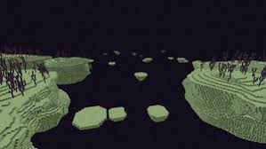
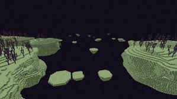
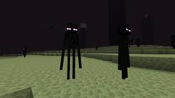
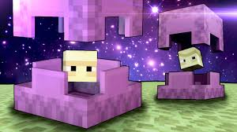
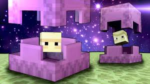
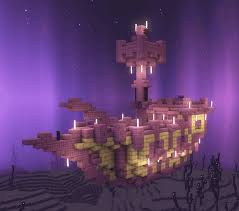
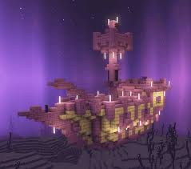

L'end
L'end est la dimension finale du jeu ou se trouve l'ender dragon,le boss du jeu.
Cet dimension est très petite et ne compte que deux biomes,l'île principale ou se trouve l'ender dragon et l'île secondaire accessible seulement
après la mort du dragon.
Les biomes :
 

Les créatures :

 

Les structures :

 
